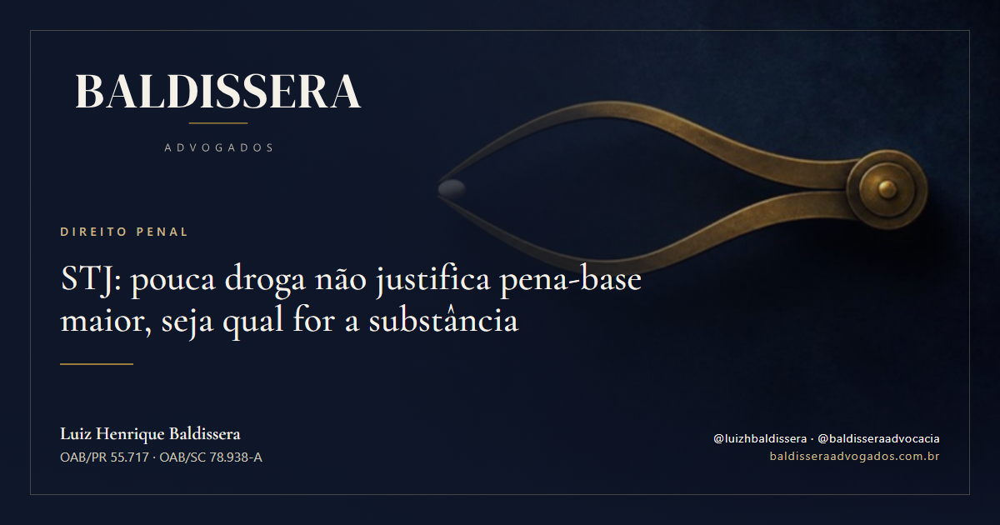

Direito Penal, outubro de 2026 STJ: pouca droga não justifica pena-base maior, seja qual for a substânciaQuem responde ou foi condenado por tráfico com pequena quantidade de droga pode ter a pena-base reduzida se o juiz a aumentou pela natureza ou pela quantidade da substância. A Terceira Seção do STJ fixou essa tese no Tema Repetitivo 1.262, e um julgado de 2026 a aplicou a 50,17 g de cocaína. No mesmo caso, o tráfico privilegiado, o regime e a substituição da pena tiveram outro desfecho.